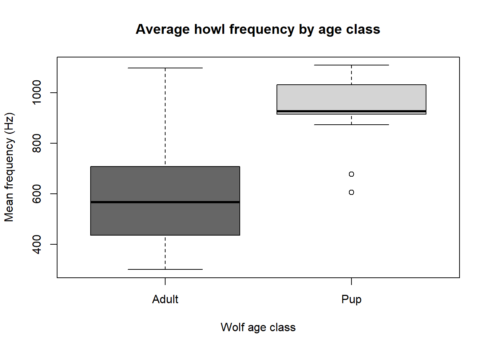

Code
rm(list = ls())
library(ggplot2)
library(grid)
library(gridExtra)
library(datasets)
library(tidyverse)
library(dplyr)
library(chron)
library(sp)
library(car)
library(lme4)
library(overlap)
library(AICcmodavg)
library(rainbow)
library(viridis)BCB 520: Data Visualization Course
For this assignment we will be looking at summary statistics and plot wolf howl frequencies for the BCB 520 data visualization course with the purpose to better understand ones data set. To learn more about Quarto see https://quarto.org.
Running Code Load necessary packages:
rm(list = ls())
library(ggplot2)
library(grid)
library(gridExtra)
library(datasets)
library(tidyverse)
library(dplyr)
library(chron)
library(sp)
library(car)
library(lme4)
library(overlap)
library(AICcmodavg)
library(rainbow)
library(viridis) wolf_data <-read.csv("C:/Users/kyleam/OneDrive - University of Idaho/Wolf Acoutic data/IWC wolf project/wolf_data.csv")
human_data <-read.csv("C:/Users/kyleam/OneDrive - University of Idaho/Wolf Acoutic data/IWC wolf project/human_data.csv")
wolf_human_data <-read.csv("C:/Users/kyleam/OneDrive - University of Idaho/Wolf Acoutic data/IWC wolf project/wolf_human_data.csv")
#' Check out the datasets
summary(wolf_data); View(wolf_data)
summary(human_data); View(human_data)
summary(wolf_human_data); View(wolf_human_data)Format wolf data
#' Rename columns so easier to use
wolf_data <- wolf_data %>%
rename("AgeClass" = "Is_it_Pup_or_Adult.") %>%
rename("Flat_vs_Break" = "Type_Howl.Flat_vs_Break")
#' Format date and time
wolf_data <- wolf_data %>%
#' Make sure R recognized DateTime data
mutate(DateTime = as.POSIXct(Recording_DateTime,
format="%m/%d/%y %H:%M",tz="US/Mountain"),
#' Grab just the date
Date = as.Date(DateTime, format = "%Y-%m-%d"),
#' Grab just the year
Year = year(Date),
#' Add column of exact time of howl by adding howl_time_offset to start time of the recording
Howl_DateTime = DateTime + Howl_time_.Offset.,
#' Convert time to radian time (necessary for then calculating sun time)
radTime = ((hour(Howl_DateTime)*60 + minute(Howl_DateTime) + second(Howl_DateTime)/(60))/1440)*2*pi)
#' Grab location coordinates of data
xy <- SpatialPoints(cbind(wolf_data$Longitude, wolf_data$Latitude),
proj4string=CRS("+proj=longlat +datum=WGS84"))
#' Convert radian times to sun times to account for seasonal changes in sunlight
#' Converts a vector of clock times to "sun times", by mapping sunrise to π/2
#' and sunset to 3π/2. Sunrise & sunset times are determined based on the dates
#' and locations provided
sunTime <- sunTime(wolf_data$radTime, Dates = wolf_data$Howl_DateTime, Coords = xy)
head(sunTime)
#' Add sunTime to data frame
wolf_data$sunTime <- sunTime
#' Create another column indicating whether recording occurred before sunrise or after sunset (i.e., when it was dark)
#' 1 = howls occurred when it was dark; 0 = howls occurred when it was light
wolf_data <- wolf_data %>%
mutate(light_or_dark = ifelse(sunTime < pi/2 | sunTime > (3*pi)/2, 1, 0))
#' Create pack_year variable
wolf_data$Pack_Year <- paste(wolf_data$Pack, wolf_data$Year, sep = "_")
#' Review categorical variables
unique(wolf_data$Howl_type)
unique(wolf_data$AgeClass)
unique(wolf_data$Flat_vs_Break)
unique(wolf_data$Pack)
unique(wolf_data$Pack_Year)
table(wolf_data$Howl_type)
table(wolf_data$AgeClass)
table(wolf_data$Flat_vs_Break)
#' Create a new variable describing howl breaks since some factor levels have few observations
wolf_data <- mutate(wolf_data,
Flat_vs_Break_reduced = ifelse(Flat_vs_Break == "High to Low to High" | Flat_vs_Break == "High to Low to High to Low to High",
"Multiple breaks starting High", Flat_vs_Break),
Flat_vs_Break_reduced = ifelse(Flat_vs_Break == "Low to High to Low" | Flat_vs_Break == "Low to High to Low to High to Low ",
"Multiple breaks starting Low", Flat_vs_Break_reduced),
#' Simplify break howls to whether howl starts high or low
Howl_start = ifelse(Flat_vs_Break == "High to Low" | Flat_vs_Break == "High to Low to High" | Flat_vs_Break == "High to Low to High to Low to High",
"Break starting High", Flat_vs_Break),
Howl_start = ifelse(Flat_vs_Break == "Low to High" | Flat_vs_Break == "Low to High to Low" | Flat_vs_Break == "Low to High to Low to High to Low ",
"Break starting Low", Howl_start),
#' Simplify flat vs break even further (Flat = 1, Breaking = 0)
Flat_or_break = ifelse(Flat_vs_Break == "Flat", 1, 0))
table(wolf_data$Flat_vs_Break_reduced)
table(wolf_data$Howl_start)
table(wolf_data$Flat_or_break)
#' Format categorical variables to be factors
wolf_data$Howl_type <- as.factor(wolf_data$Howl_type)
wolf_data$AgeClass <- as.factor(wolf_data$AgeClass)
wolf_data$Flat_vs_Break_reduced <- as.factor(wolf_data$Flat_vs_Break_reduced)
wolf_data$Howl_start <- as.factor(wolf_data$Howl_start)
wolf_data$Pack <- as.factor(wolf_data$Pack)
wolf_data$Pack_Year <- as.factor(wolf_data$Pack_Year)
#' Replace NA with 0 in number of breaks column
wolf_data$Number_Breaks[is.na(wolf_data$Number_Breaks)] <- 0
#' Add column for sex of howler to be consistent with human data
wolf_data$Sex_of_Howler <- "Unknown"
#' Look at the structure of the data for each column
str(wolf_data)Format human data
#' Rename columns so they are consistent with wolf data
human_data <- human_data %>%
rename("Howl_length" = "Duration_of_Individual_Howl") %>%
rename("Min_Hz.Time" = "Duration_of_Min_Hz") %>%
rename("Max_Hz.Time" = "Duration_of_Max_Hz") %>%
rename("Flat_vs_Break" = "Type_of_Howl") %>%
rename("Wind_condition" = "Site_Description") %>%
#' remove blank columns at end of data frame
dplyr::select(-c("X", "X.1", "X.2", "X.3"))
#' Replace NA with 0 in number of breaks column
human_data$Number_Breaks[is.na(human_data$Number_Breaks)] <- 0
#' Add column for AgeClass to be consistent with wolf data
human_data$AgeClass <- "Adult"
#' Create new variables describing howl breaks since some factor levels have few observations
human_data <- mutate(human_data,
#' Reduce number of levels for break howls with more than one break
Flat_vs_Break_reduced = ifelse(Flat_vs_Break == "High to Low to High to Low ",
"Multiple breaks starting High", Flat_vs_Break),
Flat_vs_Break_reduced = ifelse(Flat_vs_Break == "Low to High to Low" | Flat_vs_Break == "Low to High to Low to High",
"Multiple breaks starting Low", Flat_vs_Break_reduced),
#' Simplify break howls to whether howl starts high or low
Howl_start = ifelse(Flat_vs_Break == "High to Low" | Flat_vs_Break == "High to Low to High to Low ",
"Break starting High", Flat_vs_Break),
Howl_start = ifelse(Flat_vs_Break == "Low to High" | Flat_vs_Break == "Low to High to Low" | Flat_vs_Break == "Low to High to Low to High",
"Break starting Low", Howl_start),
#' Simplify flat vs break even further (Flat = 1, Breaking = 0)
Flat_or_break = ifelse(Flat_vs_Break == "Flat", 1, 0))
table(human_data$Flat_vs_Break_reduced)
table(human_data$Howl_start)
table(human_data$Flat_or_break)
#' Review categorical variables and format to be factors
unique(human_data$Sex_of_Howler)
unique(human_data$Flat_vs_Break)
table(human_data$Flat_vs_Break)
human_data$Sex_of_Howler <- as.factor(human_data$Sex_of_Howler)
human_data$Flat_vs_Break <- as.factor(human_data$Flat_vs_Break)
human_data$Flat_vs_Break_reduced <- as.factor(human_data$Flat_vs_Break_reduced)
human_data$Howl_start <- as.factor(human_data$Howl_start)
#' Look at the structure of the data for each column
str(human_data)Format wolf vs human data
#' Rename columns so they are consistent with other data
wolf_human_data <- wolf_human_data %>%
rename("Flat_vs_Break" = "Howl_Type") %>%
rename("Number_Breaks" = "Number_of_Breaks") %>%
rename("Howl_length" = "Howl_Length") %>%
rename("Sex_of_Howler" = "Sex")
#' Fill NA howler name for wolf observations
wolf_human_data$Howler_Name[is.na(wolf_human_data$Howler_Name)] <- "White Fang"
#' Fill NA sex for wolf observations
wolf_human_data$Sex_of_Howler[is.na(wolf_human_data$Sex_of_Howler)] <- "Unknown"
#' Replace NA with 0 in number of breaks column
wolf_human_data$Number_Breaks[is.na(wolf_human_data$Number_Breaks)] <- 0
#' Create new variables describing howl breaks since some factor levels have few observations
wolf_human_data <- mutate(wolf_human_data,
#' Reduce number of levels for break howls with more than one break
Flat_vs_Break_reduced = ifelse(Flat_vs_Break == "High to Low to High to Low ",
"Multiple breaks starting High", Flat_vs_Break),
Flat_vs_Break_reduced = ifelse(Flat_vs_Break == "Low to High to Low" | Flat_vs_Break == "Low to High to Low to High",
"Multiple breaks starting Low", Flat_vs_Break_reduced),
#' Simplify break howls to whether howl starts high or low
Howl_start = ifelse(Flat_vs_Break == "High to Low" | Flat_vs_Break == "High to Low to High to Low ",
"Break starting High", Flat_vs_Break),
Howl_start = ifelse(Flat_vs_Break == "Low to High" | Flat_vs_Break == "Low to High to Low" | Flat_vs_Break == "Low to High to Low to High",
"Break starting Low", Howl_start),
#' Simplify flat vs break even further (Flat = 1, Breaking = 0)
Flat_or_break = ifelse(Flat_vs_Break == "Flat", 1, 0))
#' Review categorical variables and format to be factors
table(wolf_human_data$Flat_vs_Break_reduced)
table(wolf_human_data$Howl_start)
table(wolf_human_data$Flat_or_break)
unique(wolf_human_data$Howler_Name)
wolf_human_data$Species <- as.factor(wolf_human_data$Species)
wolf_human_data$Sex_of_Howler <- as.factor(wolf_human_data$Sex_of_Howler)
wolf_human_data$Howler_Name <- as.factor(wolf_human_data$Howler_Name)
#' Set the factor levels in specific order so White Fang is reference category
wolf_human_data$Howler_Name <- factor(wolf_human_data$Howler_Name,
levels = c("White Fang", "Jade", "Kaylie", "Koryna", "Kyle", "Michael", "Peter"))
wolf_human_data$Flat_vs_Break <- as.factor(wolf_human_data$Flat_vs_Break)
wolf_human_data$Flat_vs_Break_reduced <- as.factor(wolf_human_data$Flat_vs_Break_reduced)
wolf_human_data$Howl_start <- as.factor(wolf_human_data$Howl_start)
#' Look at the structure of the data for each column
str(wolf_human_data)
#' Join larger wolf dataset with human data
skinny_wolf <- wolf_data %>%
dplyr::select(c(AgeClass, Sex_of_Howler, Flat_or_break, Flat_vs_Break, Flat_vs_Break_reduced,
Howl_start, Number_Breaks, Howl_length, Mean_Hz, Min_Hz, Max_Hz)) %>%
mutate(Howler_Name = "White Fang",
Species = "Wolf")
skinny_human <- human_data %>%
dplyr::select(c(AgeClass, Sex_of_Howler, Flat_or_break, Flat_vs_Break, Flat_vs_Break_reduced,
Howl_start, Number_Breaks, Howl_length, Mean_Hz, Min_Hz, Max_Hz, Howler_Name)) %>%
mutate(Species = "Human")
wolf_human_data_full <- bind_rows(skinny_wolf, skinny_human)
wolf_human_data_full$Species <- as.factor(wolf_human_data_full$Species)
wolf_human_data_full$Sex_of_Howler <- as.factor(wolf_human_data_full$Sex_of_Howler)
wolf_human_data_full$Howler_Name <- as.factor(wolf_human_data_full$Howler_Name)
#' Set the factor levels in specific order so White Fang is reference category
wolf_human_data_full$Howler_Name <- factor(wolf_human_data_full$Howler_Name,
levels = c("White Fang", "Jade", "Kaylie", "Koryna", "Kyle", "Michael", "Peter"))
wolf_human_data_full$Flat_vs_Break <- as.factor(wolf_human_data_full$Flat_vs_Break)
wolf_human_data_full$Flat_vs_Break_reduced <- as.factor(wolf_human_data_full$Flat_vs_Break_reduced)
wolf_human_data_full$Howl_start <- as.factor(wolf_human_data_full$Howl_start)
str(wolf_human_data_full)FINAL DATA FORMATTING
#' Grab variables you want to test for correlations
wolf_data_corr <- wolf_data %>%
dplyr::select(c("Howl_length", "Mean_Hz", "Min_Hz", "Max_Hz", "Howl_Trigger",
"Chorus_Trigger", "Minimum_count", "Number_Breaks", "Temperature_C",
"light_or_dark"))
human_data_corr <- human_data %>%
dplyr::select(c("Howl_length", "Mean_Hz", "Min_Hz", "Max_Hz", "Number_Breaks"))
wolf_human_data_corr <- wolf_human_data %>%
dplyr::select(c("Howl_length", "Mean_Hz", "Min_Hz", "Max_Hz", "Number_Breaks"))
wolf_human_data_full_corr <- wolf_human_data_full %>%
dplyr::select(c("Howl_length", "Mean_Hz", "Min_Hz", "Max_Hz", "Number_Breaks"))
#' Check for collinearity among variables
correlation_matrix <- function(dat) {
correlation_all <- cor(dat)
corr <- as.data.frame(correlation_all)
print(corr)
}
correlation_matrix(wolf_data_corr) #' Mean, min, & max correlated, howl & chorus trigger correlated
correlation_matrix(human_data_corr)
correlation_matrix(wolf_human_data_corr)
correlation_matrix(wolf_human_data_full_corr) #' Mean & min correlated
#' z-transform (center around its mean and scale by its standard deviation) continuous data
wolf_data$Howl_length.z <- scale(wolf_data$Howl_length)
wolf_data$Minimum_count.z <- scale(wolf_data$Minimum_count)
wolf_data$Minimum_Adult.z <- scale(wolf_data$Minimum_Adult)
wolf_data$Minimum_Pup.z <- scale(wolf_data$Minimum_Pup)
wolf_data$Mean_Hz.z <- scale(wolf_data$Mean_Hz)
wolf_data$Max_Hz.z <- scale(wolf_data$Max_Hz)
wolf_data$Min_Hz.z <- scale(wolf_data$Min_Hz)
wolf_data$Temperature_C.z <- scale(wolf_data$Temperature_C)
wolf_data$Number_Breaks.z <- scale(wolf_data$Number_Breaks)
human_data$Howl_length.z <- scale(human_data$Howl_length)
human_data$Mean_Hz.z <- scale(human_data$Mean_Hz)
human_data$Max_Hz.z <- scale(human_data$Max_Hz)
human_data$Min_Hz.z <- scale(human_data$Min_Hz)
human_data$Number_Breaks.z <- scale(human_data$Number_Breaks)
wolf_human_data$Howl_length.z <- scale(wolf_human_data$Howl_length)
wolf_human_data$Mean_Hz.z <- scale(wolf_human_data$Mean_Hz)
wolf_human_data$Max_Hz.z <- scale(wolf_human_data$Max_Hz)
wolf_human_data$Min_Hz.z <- scale(wolf_human_data$Min_Hz)
wolf_human_data$Number_Breaks.z <- scale(wolf_human_data$Number_Breaks)
wolf_human_data_full$Howl_length.z <- scale(wolf_human_data_full$Howl_length)
wolf_human_data_full$Mean_Hz.z <- scale(wolf_human_data_full$Mean_Hz)
wolf_human_data_full$Max_Hz.z <- scale(wolf_human_data_full$Max_Hz)
wolf_human_data_full$Min_Hz.z <- scale(wolf_human_data_full$Min_Hz)
wolf_human_data_full$Number_Breaks.z <- scale(wolf_human_data_full$Number_Breaks)Summary statistics
#' Describe attributes of (adult vs pup) wolf howls and human howls
#' -Mean Hz, howl length, number of breaks, types of breaks
#' ----------------------
##### Wolf howl summary stats #####
#' ----------------------------
(minimum_count <- summary(wolf_data$Minimum_count))
(minimum_adult <- summary(wolf_data$Minimum_Adult))
(minimum_pupt <- summary(wolf_data$Minimum_Pup))
#' Split wolf howl data by age class - need to keep these separate
adult <- wolf_data[wolf_data$AgeClass == "Adult",]
pup <- wolf_data[wolf_data$AgeClass == "Pup",]
#' Mean Frequency
(adult_meanHz <- summary(adult$Mean_Hz))
(pup_meanHz <- summary(pup$Mean_Hz))Howl Mean Frequency Plot
boxplot(wolf_data$Mean_Hz ~ wolf_data$AgeClass, ylab = "Mean frequency (Hz)", xlab = "Wolf age class", col = c("Gray 40", "Gray 83"), main = "Average howl frequency by age class")